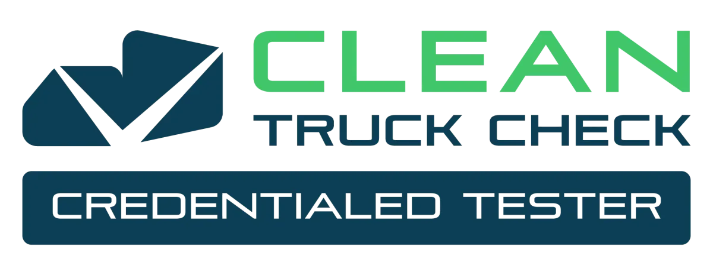

CARB-credentialed Clean Truck Check tester for diesel and alternative-fuel trucks over 14,000 lb. We test at your yard, sort out CTC-VIS problems, and keep every truck ahead of its deadline, including the move to four OBD tests a year in October 2027.

Credentialed Tester IG531606
¿Recibió un aviso de CARB? Le hacemos la prueba en su patio. Hablamos español.
Compliance first. Everything else exists to keep trucks passing and on the road.
Credentialed testing at your yard, shop, or job site. Every truck that is due, in one visit.
One owner for your Clean Truck Check calendar, so no truck slips past a deadline or a notice.
A failed test tells you something is wrong. We find out what, so the repair is done once.
Before you buy a used heavy-duty truck, find out whether it can legally work in California.
A fast on-site screen for exhaust leaks on on-road trucks and off-road diesel equipment.
Plain answers on which CARB rules apply to your fleet and what to do next.
WHY VETFLEET
Marcos Alvarez Guzman holds CARB Clean Truck Check tester credential IG531606. The person on your yard is the person running the test.
Six ASE certifications (A2, A4, A5, A6, A7, A8) and a background in heavy-duty emissions research. When a truck fails, you get the reason.
We schedule around your dispatch. Trucks get tested between loads at the yard, not pulled off the route for a trip to a test site.
U.S. Army veteran. DVBE certified. Service in English and Spanish. Response within 24 hours, usually the same day.
Veteran Fleet Technologies is a certified Disabled Veteran Business Enterprise (CA DGS 2051873). California state contracting carries DVBE participation goals, so using a DVBE tester can help agencies and their prime contractors meet them.
Cities, counties, utilities, school districts, and contractors: ask about multi-yard testing schedules.
Talk about a public fleetVans, pickups, and cars under 14,000 lb go to our light-duty side, Hybrid Veteran Vehicle Services: mobile inspections with a written report for gas, diesel, hybrid, and electric vehicles.
Visit Hybrid VeteranShort answers. The full walk-through is in the fleet compliance guide.
Diesel and alternative-fuel vehicles over 14,000 lb GVWR that operate in California, including out-of-state trucks and public fleet vehicles. Diesel and alternative-fuel hybrids are included.
Most vehicles test twice a year. CARB has scheduled OBD-equipped vehicles to move to four tests a year starting in October 2027. California-registered trucks have deadlines tied to their DMV registration dates; out-of-state trucks go by the last digit of the VIN.
2013 and newer diesel engines and 2018 and newer alternative-fuel engines get an OBD test. Older engines without OBD get an SAE J1667 smoke opacity test plus a visual inspection of the emissions control equipment.
A Notice to Submit to Testing gives you 30 days to submit a passing compliance test. Call us with the notice in hand and we will schedule the test. If the truck fails, we diagnose the fault so it can be repaired and retested inside the window.
Yes. Testing is mobile. We come to your yard, shop, or job site and test the trucks that are due in one visit, so drivers stay on the route instead of driving to a test site.
It needs repair and a passing retest. We read the fault data, tell you what the likely cause is, and give you a repair plan for your shop or ours to act on. A failed test is a diagnosis, not a dead end.
Tell us how many trucks and where they are. We respond within 24 hours, usually the same day.
Phone: (562) 659-7554
Email: marcos@vetfleet.com
Based in: Riverside, CA. Mobile, we come to you.
Response: Within 24 hours, usually the same day.
Idiomas: English / Español
Call with the notice in hand. The 30-day window starts when it is issued, so do not wait on email.